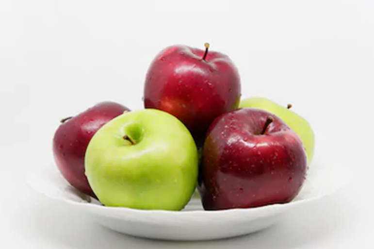
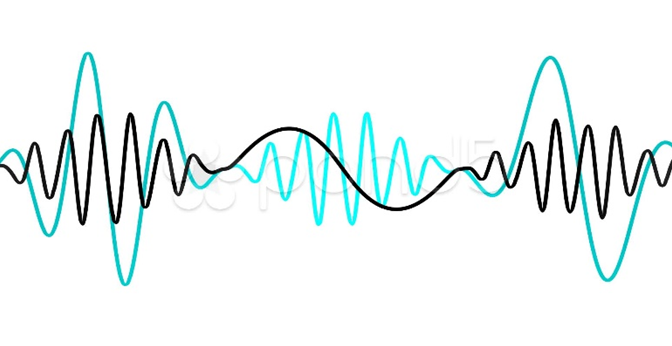

C’est quoi l’informatique
Dans ce chapitre je vais vous montrer la définition de l’informatique.
Vous avez déjà utilisé l’informatique soit dans votre ordinateur ou dans votre téléphone portable, vous avez utilisé des logiciels.
Mais, est ce que vous avez poser la question : c’est quoi l’informatique.
Je vais vous montrer dans cette présentation la définition de l’informatique via trois autre définitions
- Information
- Traitement de l’information
- Traitement automatique de l’information
Informatique - notions de base
La notion de l’informatique est en relation avec trois autre notions :
- Information
- Traitement de l’information
- Traitement automatique de l’information
Information
Tous d’abord, c’est quoi l’informaiton.
Vous pouvez voir l’information comme un renseignement sur une personne, un objet ou un événement
Je vous donne un exemple. Le plat que vous voyez contient 5 pommes.

Comme information : je peut vous dire que
Information : « le plat contient cinq pomme »
Formes d’informations
L’information peut prend plusieurs formes :
- Numérique
- Alphanumérique
- Textuelle
- Visuelle
- Sonore
- Audiovisuelle
Numérique
- 5
- 5,5
Alphanumérique
- A
- 5
Textuelle
- Pomme
- 5 pommes
Visuelle
Sonore

Audiovisuelle
Information et données
Maintenant, quelle est la relation entre information et donnée ? Souvent on mélange ces deux notions.
Nous pouvons voir l’information comme une association entre les données
Je vous donne un exemple : à partie de notre plat qui contient 5 pommes. Nous avons deux données
- Donnée 1 = 5 pommes
- Donnée 2 = un plat
et une association
- Association 1 = les pommes sur le plat
Information 1 = Le plat contient 5 pommes
Traitement de l’information
Maintenant, c’est quoi le traitement de l’information
Traitement de l’information - exemple
Maintenant, c’est quoi le traitement de l’information
Pour vous expliquer, on prend l’exemple d’un caissier qui veut calculer la somme des articles achetés par un client.
Pour calculer cette somme le caissier doit connaître le prix de chaque article. Ensuite il va faire un ensemble d’opérations arithmétiques pour calculer le total à payer. Comme résultat, nous obtenons la somme à payer.
Dans un traitement, le prix d’article 1 et d’article 2 s’appelle données d’entrés. Et la somme à payer s’appelle résultat. On parle ici du traitement Calculer la somme à payer.
Traitement - Définition
À partir cette exemple nous pouvons déduire la définition suivant :
Le traitement de l’information est une suite d’opérations avec un ordre, sur les informations de départ pour d’obtenir une nouvelle information qui s’appelle résultat.

Traitement Automatique
Traitement automatique ou manuel
Ce traitement peut prend plusieurs formes :
- Automatique
- Semi-automatique
- Manuel
On dit que le traitement est automatique s’il est réalisé par un ordinateur. On dit que le traitement est semi-automatique s’il est réalisé par un humain en utilisant un calculatrice. Et finalement, si le traitement est réalisé par un crayon et un papier on dit que le traitement est manuel.
Informatique
Informatique - définition
Il est claire que :
l’informatique est une est une science qui nous donne des outils pour faire le traitement automatique des informations.
Ce traitement est généralement faite par une machine électrique ou un ordinateur.
J’aimerai noter ici que, la source du nom informatique vient comme une combinaison entre le terme information et automatique